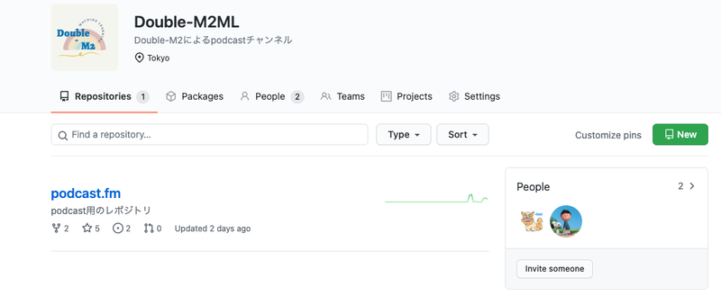

はじめに
6月から友人の@navitacionさんと一緒にPodcastの配信を開始しました．テック系の話題など自分たちが興味のある内容をあれこれと話すものになります．
Anchorという無料で配信できるプラットフォームを使用しており，チャンネル名は「Double-M2.fm」になります．
各Episodeの要約もありますので，興味を持って頂いた方はこちらから見ることができます．
この記事では，naviさんと始めたキッカケと実際の配信方法をまとめています．配信方法はあまり検索しても記事が無かったりしたので，これから始めようとしている人の参考になればと，そしてPodcast配信者が一人でも多く増えればなーと思います．
配信のキッカケ
配信のキッカケは初回配信時にもチラッと触れたのですが，大きく2つ（+1）あります！
- コロナ禍で，オフラインイベントが無くなったことで，イベント後に参加者同士で雑談したり，情報交換したりする機会が無くなってしまったので，それを定期的にしたいという想いから
- アウトプットを意識するようになって，それを継続的に行っていく場の一つとして，音声による方法もあるのではという想いから
- 話のタネとしていいかなと笑
一つずつ説明していくと， まず①について，これは思っている人が多いんじゃないかなと思いますが，コロナ禍でオンラインでのイベントは多く開催されており，オフライン時に比べたら移動する手間もなくハードルが下がって，参加人数の制限も実質無制限で，抽選漏れの懸念も無くなりと良いことも多くある一方で，イベント後に登壇者以外の人同士や登壇者との会話がほぼほぼ無くなって，雑談とか情報交換したりする機会がかなり減ったと個人的に感じています．
そういった状況で，会社の人以外の人と雑談など会話する時間が圧倒的に減ったというのもあり，定期的に情報交換したり意見を言い合える場があると良いなーということで今回Podcastを始めました． （最近だと，Twitterが音声会話サービスのSpaceを始めて，そこで気軽に会話が生まれるのがスゴく良いなと感じてます！）
②については，かなーーりサボり気味だったのですが，アウトプットちゃんとして行かないとなーという気持ちが高まり，それを強制的に行う一つの方法だったりもします！ Podcastで話すために，何かしらの話題を探したり，書籍・論文などを読んで調べたりとトピックの内容を整理する必要があると思います．また，内容を自分の言葉で相手に説明することで理解の助けになると思っています．（人に説明してみると，思ったよりわかってないなーと感じることあるあるだと思います）
アウトプットの方法の一つとして，ブログにまとめるということ以外に音声でもやろうかなといったところです． あと，普段から「これ！Podcastで話せるかも」とった意識をするだけで理解の仕方が変わると思うので，この習慣を付けたい狙いも個人的にあります！
最後に③について，これはTwitter上ではお互い認知していても，リアルだと会ったことない人との話のネタの一つにしようかなという魂胆です笑
配信方法
配信するプラットフォームですが，これは僕が聞いている他のPodcast配信者のを参考にして，Anchorにしました．Anchorは携帯でも簡単に録音することができて，それを配信できちゃったりもします．
以下が僕たちが配信している各種構成になります．
※ 全て無料で行うために，これらの構成になっています，有料でもいい場合はここで紹介したような複数ツールを使わなくて済むと思います．
- メール: Gmail
- 配信プラットフォーム: Anchor
- 録音: Zencastr
- 画面共有: Google Meet
- スクリプト: Scrapbox + GitHub
- 編集: Audacity
- 音楽 (BGM): Evoke Music
- アイコン: Canva
1. メール
- 各種サイトにアカウント登録する際にはメールアドレスが必須なので，まず共通で利用するメールアドレスを取得しました．
- 簡単に作成できるので，Gmailを新規作成し利用しています．
2. 配信プラットフォーム
- 最初にも書きましたが，配信プラットフォームはAnchorを採用しています．
- アカウントを作成し，Podcast name, descriptionなどを設定するだけで大丈夫です．無料で使うことができるのでおすすめです！
- New Episodeから録音したり，既にある音源をアップロードすることも可能になっています．また，BGMなども用意されています．
- ただ，遠隔地にいる人同士での複数人録音は出来なさそうだったので，僕たちは録音は後述の別ツールを使うことにしました．
- 音源をアップロードすると，スケジュールでの投稿予約ができます．そして，最初のEpisodeが登録されると，自分たちだけのPublic Siteが生成され，そこで新しいPodcastを聴くことができます．
WHERE TO LISTENの部分ですが，新しいPodcastが配信されたら，RSSのクローラーが検知して，色んなアプリで聴くことができます！ただし，SpotifyとApple Podcastsに関しては，RSSのURLを登録する必要があります．詳しくはこちらのnote記事が参考になるかと思います．ちなみに，RSSのURLは配信が開始したら表示されるSettings->Distributionから確認することができます．
3. 録音
録音はAnchor上では行わず，Zencastrというツールを使いました．またZencastrは複数人の録音も行うことができ，非常に便利です！
プランは無料のHobbyistと有料のProfessionalがあります．僕たちは無料プランを使っていますが，制限としては以下になります．
- 無料プランの制限：
- 1．ゲストは2名まで
- 2．1ヶ月あたり8時間の録音時間
基本的に二人での配信かつ週1回30分程度の録音時間なので，無料プランで全く問題ありません．また，Zencastrでは画面の録画もできるみたいです．（※コロナの期間は，無料プランでもゲストと録音時間が無制限になっているみたいです）
こちらもAnchor同様，アカウント作成後，Create New Episodeで新規作成を行うと画面と音声の録画・音声録画（画面表示あり）・音声録画のみの3パターンから選択します．
タイトルを入れて作成すると，下記のような画面が出ます．

ここで，Inviteタブをクリックすると同時に会話する人のメールアドレスにリンクを送付する形で招待することができます．Inviteした人が入ってくると，そのまま通話状態になり録音を開始することで，そのまま両方の音声を録音することができます．
あとは，録音終了後参加していた人の音声をMP3でダウンロードすることができます．（これは管理者のみ可能な操作）
僕たちは使わなかったですが，Macでネット通話の音声を録音する方法（Soundflower, LadioCast, GarageBand）の記事を紹介しておきます．→ Macでネット通話の音声を録音する方法（Soundflower, LadioCast, GarageBand）
4. 画面共有
スクリプトなり資料なりを見ながら会話がすることが多いので，画面共有が必要になってきます．そのために，Google Meetを使って画面共有しながら会話するようにしています．
5. スクリプト（台本・要約など）
収録を行う前に，事前に30分程度会話して何を話すか決めています．その際に，Scrapboxを活用して台本を作成したり，ネタ帳なども雑多に書いています．あとは，共有しておきたいことをScrapboxに書いて基本的にはここを見ながらいつも収録しています．
参考にした記事 → 初めてのポッドキャスト、試して気づいた「声」の醍醐味と9つのティップス
Scrapboxの他には，GitHubも使ってます．こちらは，Organizationを作成し，そこにPodcast用のrepositoryをさらに作成して，自己紹介ページや各配信の収録内容の要約を書き記しています．ページの更新時にはissueを作成し，何をしたか記録が残るようにしています．

6. 編集
編集に関しては，特別何かしているわけではないです．なるべく時間をかけず無理なく進めていきたいと思っているので，行っている内容としては下記2点です．
- 音量調整・BGM挿入
- 収録中に予期しない割り込みが入って，収録を止めた際のトリミング・不要な会話の削除
一通り自分たちの会話を聞いて，気になる部分があればトリミングなどしているぐらいになります．
編集ソフトはAudacityを使っていて，昔からある音楽編集ソフトになります．Windows・Macどちらも使用することができます． Macの場合だと初めから入っているGarageBandなども使えるみたいです！
7. 音楽 (BGM)
Podcastを配信する時には，自分たちの音声に加えてBGMを追加しています．ただ，自分たちのコンテンツにBGMを使用する場合には，著作権などが絡んでくるので，安易に好きな曲を使用することはできません．楽曲1つ1つ確認するのは大変なので，今回は著作権フリーでAIが曲を作成してくれるEvoke Musicというサイトの音源を使用しています．
このサイトでは，キーワードを指定することで，そのキーワードに合った曲をAIが自動で作成してくれます．1曲あたり数分程度の曲になります．
※ β版の時は無料で使えてましたが，今は有料になってしまったみたいです．
8. アイコン（カバーアートなど）
Anchorにはカバーアートが設定できるので，そのアイコンなどを作成するために，Canvaというデザインサイトを利用しました．Canvaは豊富なテンプレートデザインがあるので，それをベースに自分でいい感じに編集するだけでかなりオシャレなロゴなどを作成することができます．
無料プランだと保存時の画像サイズや解像度などを変更できないので，少し残念ですが，かなりオススメのサイトです．有料だともっと出来る幅が増えそうですが，現状だと無料プランでも十分かなと思っています．
おわりに
今回は6月から開始したPodcastについて，やろうと思ったキッカケとその配信方法をまとめました．配信方法については意外と記事がなかったので，もしこれから配信しようと考えている人の参考になれば嬉しいです！
今回紹介した方法以外にも，もっと良い配信方法があると思うので，ご存知の方は是非教えて欲しいです！！一人でも多くのテック系Podcastが増えて盛り上がると良いなと思います！！
P.S. 細かい設定や登録など聞きたいことがある場合には，遠慮なくTwitterなどでご連絡頂ければと思います．